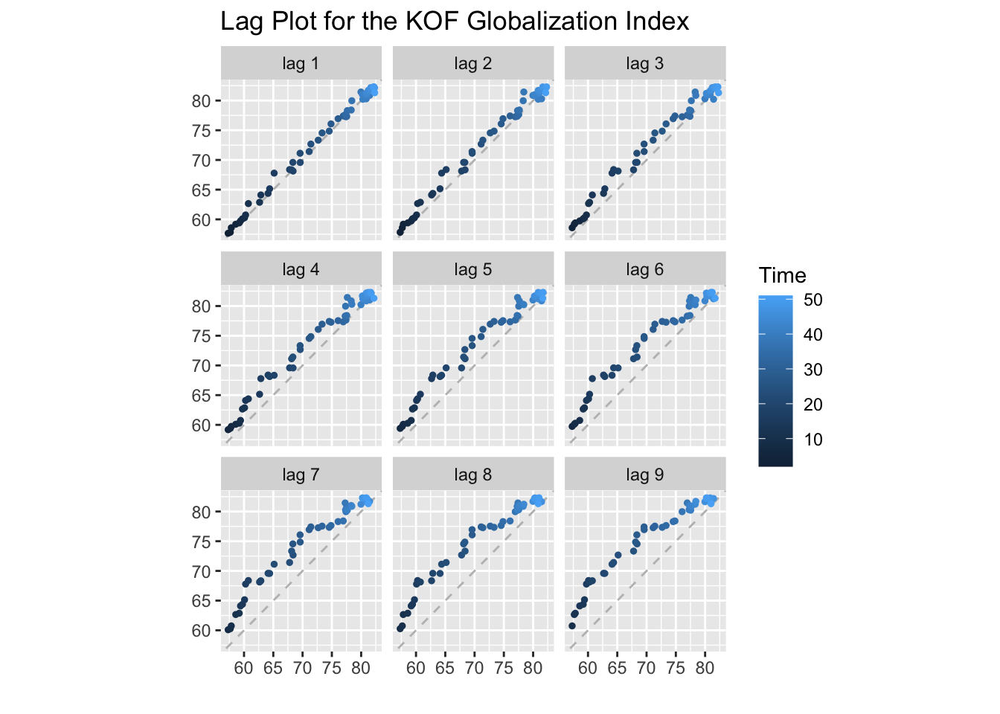
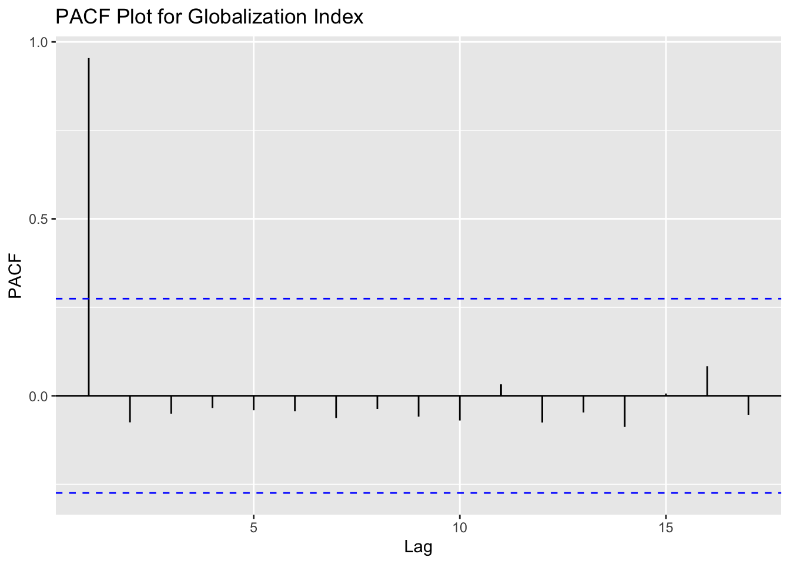
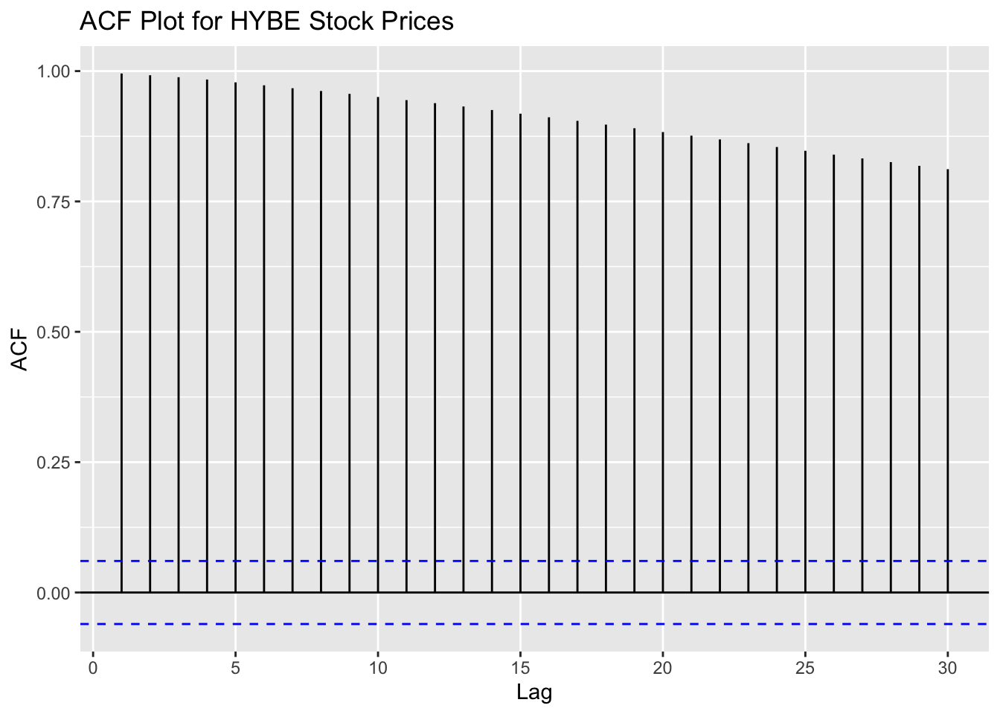
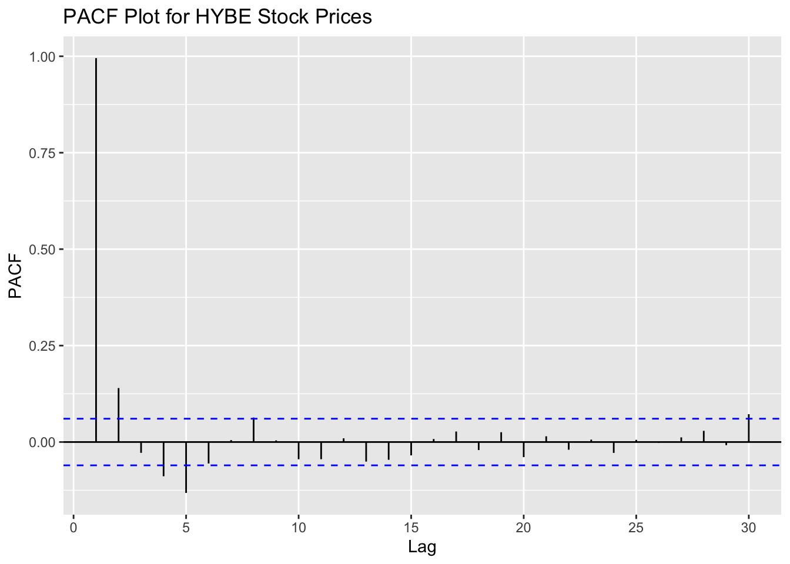

Now, I will be conducting a Time Series EDA analysis on the globalization indexes and the record label stock prices. Due to the structure of the other data, I cannot conduct further time series EDA on those sets.
Let’s begin by anaylzing globalization of the United States from 1970 to 2022. I will be using the general globalization index for this time series anaylsis. First I will begin by filtering the data and creating a time series object in R. This will allow us to plot the time series data for initial analysis.
Time Series plot:
Code
# Import datasetglobal <-read_csv('globalization.csv')# Filter informationglobal <- global %>%filter(country =='United States') %>%select(year, KOFGI) %>%mutate(year =as.Date(year))# Create time seriesglobal_ts <-ts(global$KOFGI, star=decimal_date(as.Date("1970-01-01", format ="%Y-%m-%d")), frequency =1)# Create time series plotglobal_plot <-plot(as.ts(global_ts), main ="Time Series of KOF Globalization Index within the United States",xlab ='Time', ylab ='KOF Index')
Code
# Show plotggplotly(global_plot)
From the plot of the globalization index in the United States, we can see a strong positive upward trend. In terms of seasonality and cyclic patterns, we are unable to see such patterns in the plot. Additionally, we can see very slight peaks in the data in 1986 and 2009, however, they are not enough to conclude any patterns in the data. Thus,we can say this plot is neither additive nor multiplicative.
Next, let’s take a look at a few lag plots of data on itself as well ACF and PACF in order to identify possible signs of stationarity.
Lag-plot:
Code
gglagplot(global_ts, do.lines=FALSE)+ggtitle("Lag Plot for the KOF Globalization Index")

We can see in lags 1,2, and 3 a very strong positive linear relationship, meaning a positive autocorrelation in the lags. From lag 4 and onward, the trend is still strongly positive, but less linear, suggesting a weaker autocorrelation. We also don’t see any groupings in the lags, suggesting that there is no seasonality in the data.
ACF & PACF:
Code
ggAcf(global_ts)+ggtitle("ACF Plot for Globalization Index")
Code
ggPacf(global_ts)+ggtitle("PACF Plot for Globalization Index")

Looking at the ACF and PACF plots, we get a better understanding this time series. The ACF plot shows the present lag is significantly correlated with the first 12 years, after which it become significantly uncorrelated. Additionally, the PACF shows a stationary plot, due to the PACF values being contained in the significance bands. Thus, we can say that there is in fact strong autocorrelation in this time series data, however correlation is not present within the residuals.
Augmented Dickey-Fuller Test
data: global_ts
Dickey-Fuller = 0.59021, Lag order = 3, p-value = 0.99
alternative hypothesis: stationary
The Dickey-Fuller Test, with tests the alternative hypothesis that the time series is stationary, concluded a p-value of 0.99. Since 0.99 > 0.05, we do not have enough evidence and thus, fail to rejec the null hypothesis, meaning that the time series object is not stationary.
Stationary:
Therefore, in order to obtain stationary data to runs an ARMA and AMRIMA model on, we will need to compare differenced and detrended data to find which approach produces stationary data.
From this plot, we can clearly see that the first differenced data results in a stationary plot, with the ACF values inside the significance bands. Since the first difference was able to coerce the data to be stationary, we can also say that the original data was linearly trended. Thus, moving forward, we will use first differencing on the globalization index in order to model this value.
Stock Prices: Looking at HYBE Entertainment
Time Series plot:
Next, since we saw, through the initial data visualization, the prevelance of Kpop and specifically BTS on the western music industry, we will take a look at HYBE stock prices through further time series EDA.
Primarily, we will clean our data such that missing dates corresponding to weekends and holidays where the stock market is closed will be estimated through exponential prediction. After which we will take the data and transform it into a time series object to plot.
Code
options("getSymbols.warning4.0"=FALSE)options("getSymbols.yahoo.warning"=FALSE)name <-getSymbols('352820.KS', from ="2019-01-01", to ="2023-09-01")HYBE <-data.frame(`352820.KS`$`352820.KS.Adjusted`)HYBE <- HYBE %>%rownames_to_column(var ="Date") %>%mutate(Date =as.Date(Date)) %>%rename(Price = X352820.KS.Adjusted) %>%mutate(Price = Price/1352.60)start_date <-as.Date("2020-10-15")end_date <-as.Date("2023-09-01")all_dates <-data.frame(Date =seq(start_date, end_date, by ="days"))merged_data <- all_dates %>%left_join(HYBE, by ="Date")imputed_time_series <-na_ma(merged_data, k =4, weighting ="exponential")df_HYBE <-data.frame(imputed_time_series)df_HYBE$Date <-as.Date(df_HYBE$Date,format ="%Y-%m-%d")# Create time seriesHYBE_ts <-ts(df_HYBE$Price, star=decimal_date(as.Date("2020-10-15", format ="%Y-%m-%d")), frequency =365.25)# Create time series plotHYBE_plot <-plot(as.ts(HYBE_ts), main ="Time Series of HYBE Stock Prices",xlab ='Time', ylab ='Price (USD)')
Unlike the globalization index, the HYBE stock price fluctuates quite frequently in the smaller range of time. From 2021 to 2022, we can see a strong positive trend with slight seasonality. However, from 2022 onwards we see a sharp downward trend and with varying degrees of peaks. Thus, the uneven nature of the peaks and troughs results in data that is neither additive or multiplicative. Additionally, since the dataset is smaller, we cannot say anything of certain regarding cyclical patterns.
Next, let’s take a look at a few lag plots of data on itself as well ACF and PACF in order to identify possible signs of stationarity.
These lag plots show similar results to that of the globalization index. The forst four lags have a very strong positive linear correlation, suggesting autocorrelation amongst those lags. From lag 5 onwards, we still see a string linear correlation, however we can also see a small circular pattern forming in the lag plots, suggesting a possibility of single-cycle sinusodial data.
ACF & PACF:
Code
ggAcf(HYBE_ts, lag.max =30)+ggtitle("ACF Plot for HYBE Stock Prices")

Code
ggPacf(HYBE_ts, lag.max =30)+ggtitle("PACF Plot for HYBE Stock Prices")

Similar to the globalization index, the ACF plot shows the present lag is significantly correlated with all other present lags in the plot, since all values are well above the siginificance bands. Additionally, the PACF shows a stationary plot, due to the PACF values being contained in the significance bands. Thus, we can say that there is in fact strong autocorrelation in this time series data, however correlation is not present within the residuals.
Dickey-Fuller Test:
Code
HYBE_test <-adf.test(HYBE_ts)print(HYBE_test)
Augmented Dickey-Fuller Test
data: HYBE_ts
Dickey-Fuller = -2.0109, Lag order = 10, p-value = 0.5737
alternative hypothesis: stationary
The Dickey-Fuller Test resulted in a p-value of 0.5737. Since 0.5737 > 0.05, we can fail to reject the null hypothesis and say that the time series object is not stationary.
Stationary:
Given that the original data is not stationary through the Dickey-Fuller test, we will use the detrending and differencing methods to coerse the data to become stationary.
However, after trying both detrending and first difference methods, both result in ACF plots showing autocorrelation and non-stationary tendencies. Thus, we will try the second differencing approach.
With the second difference, we were able to get the HYBE stock prices to become stationary. Therefore, we could also suggest the original data has quadratic trending behavior.
Thus, going forward, we can use the second difference of the HYBE stock prices for modeling.